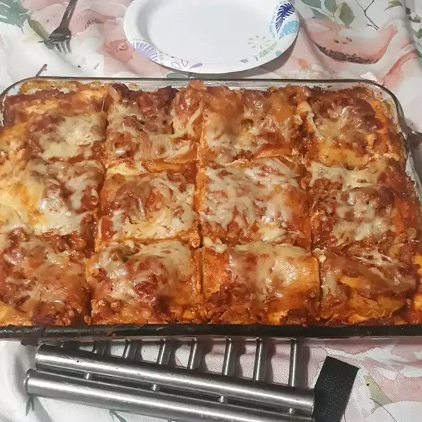

Lasanha fácil

Uma lasanha feita de maneira simples e satisfaz toda a família, tente fazê-la hoje a noite!
Ingredientes:
- 0,5 kg de carne moída (parte do boi de sua preferêcia)
- 1 pacote de macarrão de lasanha
- 1 kg de queijo do tipo cottage (sim queijo para caramba, quanto mais melhor 😋)
- 3 xícaras de queijo mussarella ralado (mais queijo 😋)
- 1/2 de queijo parmesão ralado
- 2 ovos
- 2 colheres de sopa de salsa seca
- Sal a gosto
- Pimenta do reino a gosto
- 1/2 xícara de água
Preparação:
- Preaqueça o forno em 350°C
- Aqueça uma frigideira grande em fogo médio. Adicione a carne moída e cozinhe até dourar, 8 a 10 minutos.
Escorra a graxa. Junte o molho de espaguete e cozinhe por 5 minutos.
- Misture o queijo cottage, 2 xícaras de queijo mussarela, ovos, 1/2 do queijo parmesão ralado, salsa seca,
sal e pimenta em uma tigela grande.
- Espalhe 3/4 xícara de molho em uma assadeira de 9x13 polegadas. Cubra com 3 macarrão de lasanha cru, 1 3/4
xícaras de mistura de queijo e 1/4 xícara de molho; repita as camadas mais uma vez. Cubra com os 3 macarrão
restantes, molho, mussarela e queijo parmesão. Adicione 1/2 xícara de água ao longo das bordas do prato.
Cubra bem com papel alumínio.
- Leve ao forno pré-aquecido por 45 minutos. Descubra e asse por mais 10 minutos. Deixe repousar 10 minutos
antes de servir.
- Saboreie sua lasanha 😋
Retornar para página inicial